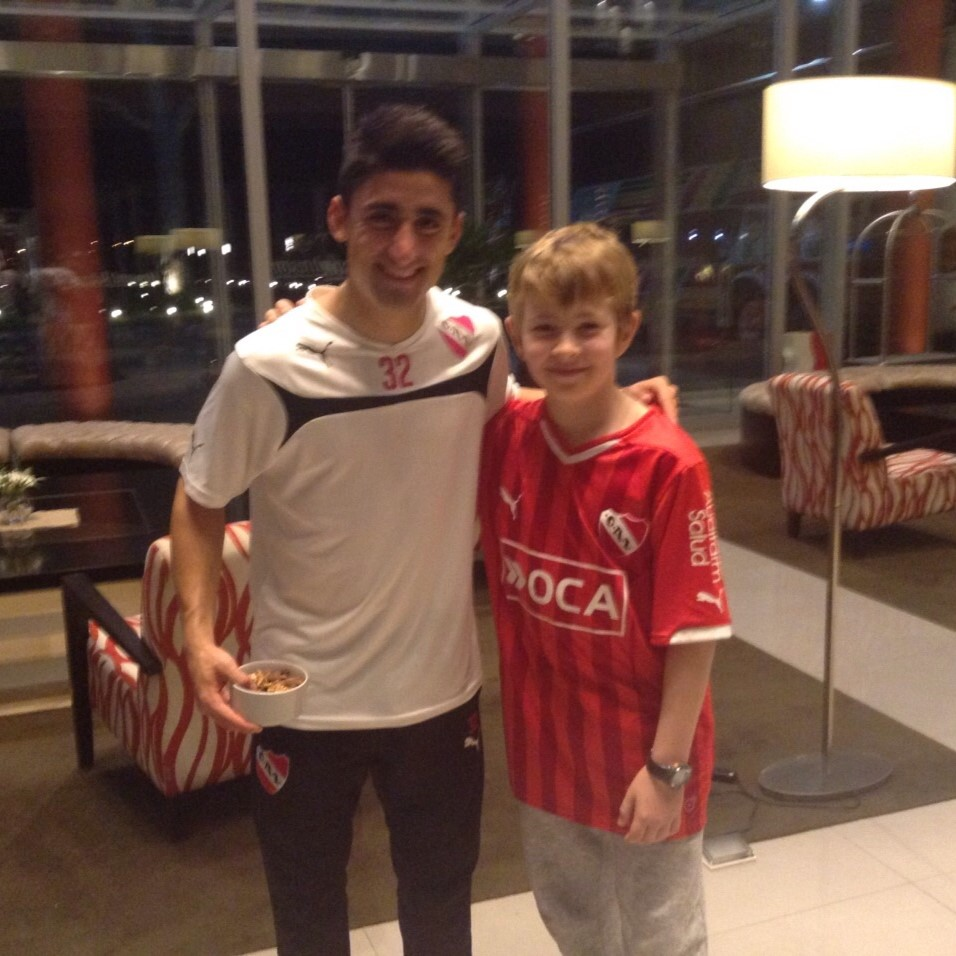

 Nací en Moreno, Buenos Aires, y a los 2 años me mudé a Luján, el lugar donde crecí. Desde chico mi papá y mis hermanos me hicieron fanático de Independiente; es una pasión que aún mantengo. A los 3 años ingresé al colegio donde más adelante terminé mis estudios secundarios. Tengo 2 hermanos y 1 hermana, todos más grandes que yo. Desde hace ya tiempo que no convivo con ellos; mi hermana vive sola y mis hermanos se fueron a otro país. Siempre fui muy inquieto, tanto que hasta el día de hoy me tuvieron que coser la cabeza en más de 3 ocasiones, me fracturé la clavícula y se me dislocó algún que otro hueso. Por otro lado, toda mi vida estuve rodeado de mascotas, al criarme en un ambiente de campo tuve la posibilidad de estar en contacto con perros y gatos, como tambien caballos, gallinas y gallos. Hoy en la casa a la que regreso cuando vuelvo a Luján me esperan 3 perros y 1 gato.
Hoy en día me encuentro estudiando gestion de tecnología de la información en una universidad, viviendo a unas 2 horas de Luján, de todas formas vuelvo de visita todos los fines de semana. Como había mencionado, mi vida sigue asociada con Independiente, suelo ir a la cancha con mi papá todas las veces que podamos. Otras de las actividades que disfruto son, por nombrar algunas; cocinar, jugar futbol, juntarme con amigos y viajar. Desde que comienza el lunes espero con ansias que sea el viernes, más allá de que sea fin de semana, lo que deseo es volver a Luján.